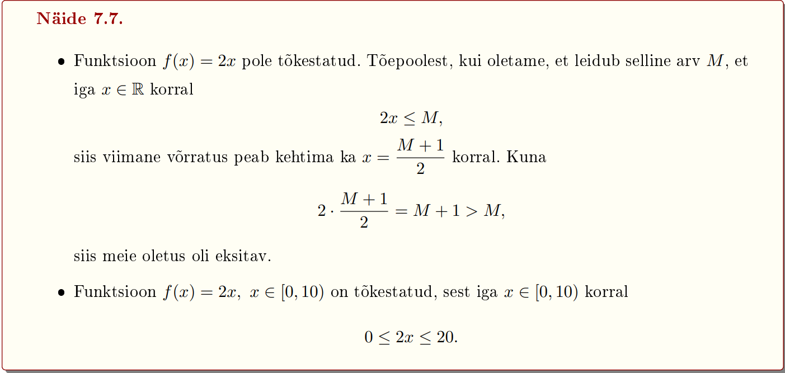

Funktsioonide liigid
Tõkestatud funktsioonid
Olgu hulk D funktsiooni f määramispiirkonna alamhulk.
1. Öeldakse, et funktsioon f on ülalt tõkestatud hulgas D, kui leidub arv M ∈ R nii, et
f(x) ≤ M iga x ∈ D korral.
2. Öeldakse, et funktsioon f on alt tõkestatud hulgas D, kui leidub arv m ∈ R nii, et
m ≤ f(x) iga x ∈ D korral.
3. Öeldakse, et funktsioon f on tõkestatud hulgas D, kui leiduvad arvud m, M ∈ R nii, et
m ≤ f(x) ≤ M iga x ∈ D korral.
l
Kui on öeldud, et funktsioon on tõkestatud ja pole mainitud millisel hulgal, siis on mõeldud, et funktsioon on tõkestatud oma määramispiirkonnas.

eelmine teema
järgmine teema